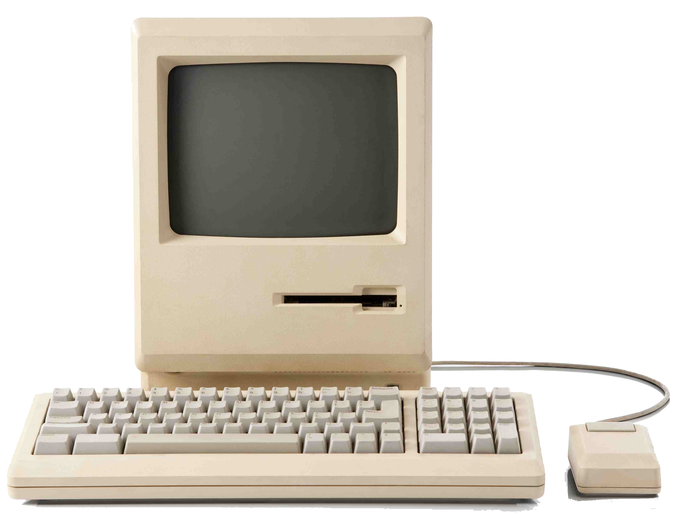
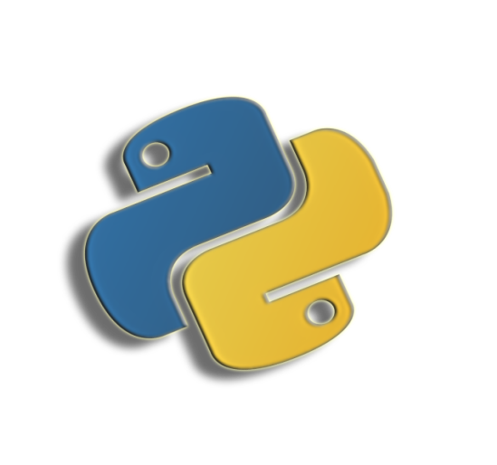
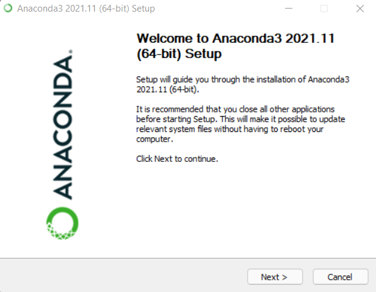
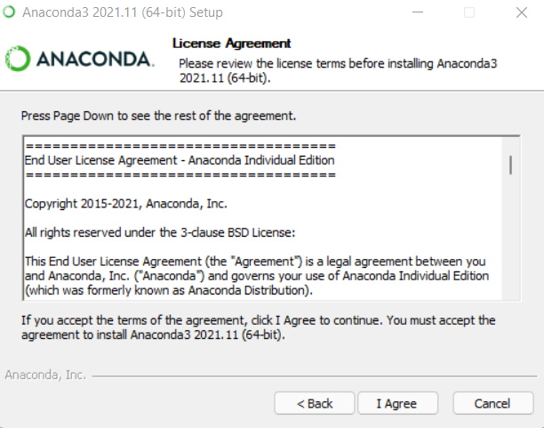
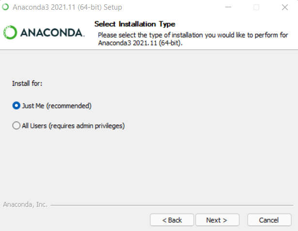
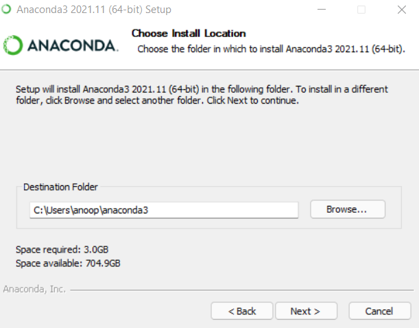
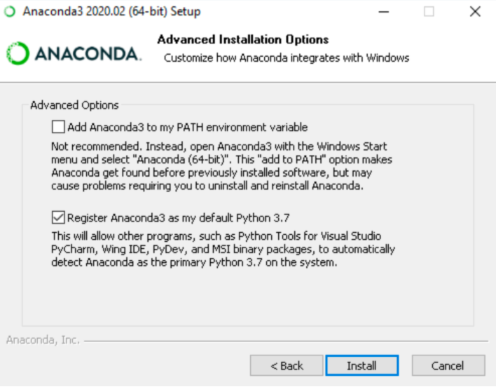
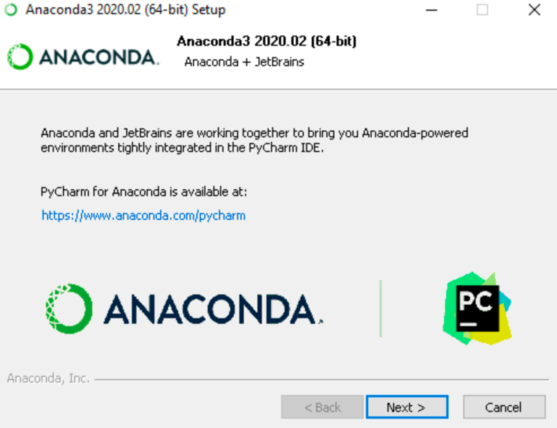
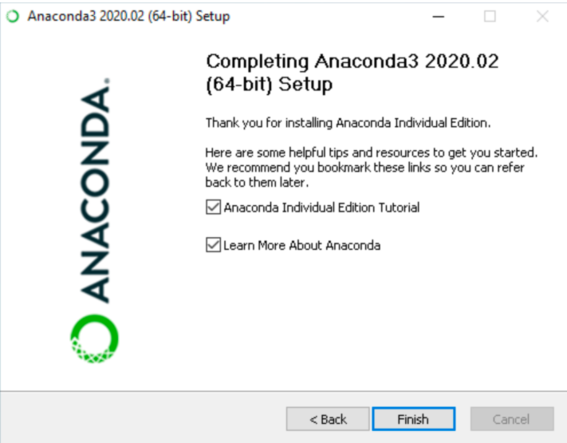

Welcome to PythonPythonME
Python is a high-level programming language that is used for creating a variety of applications.
Its has a design philosophy which places a strong emphasis on code readability.
Its object-oriented approach is designed to assist programmers in writing clear, logical code for both small and big projects.

Python supports a variety of programming paradigms, including procedural, object-oriented, and functional programming.
Python also has an extensive standard library making it favorable among programmers.
These are many of the reasons to learn Python.
What is a Program ?
A program is a set of instructions that tells a computer how to do something. The computation might be mathematical, such as solving a system of equations or determining the roots of a polynomial.
Here are a few Basics:
-
Input: Get information from the keyboard, a folder, the system, or another device.
-
Output: Display information on the screen, store it to a file, transfer it over the net, and so on.
-
math: Carry out simple mathematical operations such as addition and multiplication.
-
Conditional execution: When specific circumstances are met, the relevant code is executed.
-
Repetition: The act of repeating an action, generally with some modification.
Every software you've ever used, no matter how
complex, is built up of instructions similar to these.
So consider programming to be the process of splitting a
huge, complicated work into progressively smaller subproblems
until the components are simple enough to have been completed with these
fundamental instructions.
Installing Python

Step 1: Select the Python version to install.
The setup process entails downloading and executing the official
Python.exe installer on any PC.
The edition you require is dependent around what you expect to
accomplish in Python.
For instance, whether you are working on projects written in The python version 2.6, you would most likely require that version.
You have had the opportunity to pick if you
should be beginning a project from start to finish.
I suggest that you get the most modern iterations of Python 2 and 3 if
you are beginning to develop in Python.
Python Download Page : Official Download Page

Developing with Python 2 allows people to work on older projects even while testing new ones for backward compatibility.
Step 2:
Download the Python Executable Installer.
Browse to the Downloads for Windows segment of the official Python
webpage using your search engine.
Look for the Python version that you would like. At the time of this
writing, the most recent Python 3 release is 3.10.3, while the most
recent Python 2 release is 2.7.18.
Choose a download link the Windows x86-64 executable installer or the
Windows x86 executable installer.
Step 3: Launch the Executable Installer.
Once downloaded, run the Python Installer.
(In this case, Python 3.7.3 was downloaded.)
Ensure that Install launcher for all users & Add Python 3.7 to
PATH checkboxes are checked. The interpreter is added to the
execution path by the latter.
Choose Install Now, which is one of the suggested
installation alternatives.

OR
Install Python with Anaconda
-
Install Anaconda from this link : Download the Anaconda installer.

-
It would download an Exe file of approximate size ~500mb.
-
Double click the installer to launch a installation window would open.

-
Next, click the button.
After reading the licensing conditions, click "I Agree."

Select "Just Me" as the installation type, unless you're installing for all users (which requires Windows Administrator capabilities), and then click Next.
Choose a location for Anaconda installation and click the Next button.
-
Select whether or not to include Anaconda in your PATH environment variable.

-
I do not advocate adding Anaconda to the PATH environment variable, since it may interact with other applications. Instead, launch Anaconda software from the Start Menu by selecting Anaconda Navigator or Anaconda Prompt.
-
Choose whether or not to make Anaconda your default Python. Accept the default and leave this option selected unless you want to install and operate several versions of Anaconda or Python.

-
Select the Install option. Click Show Details to see the packages Anaconda is installing.
-
Next, press the Next button.

-
Optional: Install PyCharm for Anaconda by visiting https://www.anaconda.com/pycharm.
-
Click the Next button to install Anaconda without PyCharm.
-
Success, you have successfully installed Python.
-----------------------------------------------------------------------------------------------------------------------------------------------------------------------------------------
-----------------------------------------------------------------------------------------------------------------------------------------------------------------------------------------